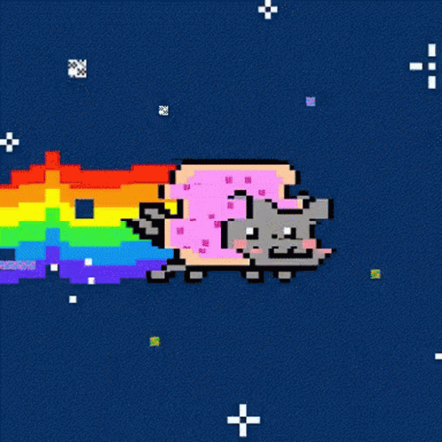

Student Developer
Dmitry Karmazin
Dnipropetrovsk Oblast, Ukraine
About me
I am an Applied Mathematics student at DNU building a public portfolio from real university labs, backend exercises, and small programming projects. I mainly work with C++, Java, Python, JavaScript, and Prolog, and I enjoy turning rough coursework into cleaner repos with readable structure.
- Coursework-based portfolio with public GitHub repos
- Interested in backend, problem solving, and software engineering
- Currently improving old projects and turning them into clean portfolio entries
Portfolio Status

Dnipro National University
Actively filling this page with finished university work.